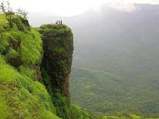
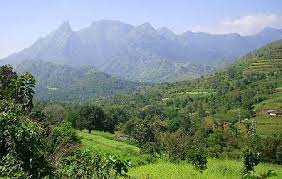

Nelliyampathy Hills
From the town of Nenmara in Palakkad district, the cloud-caressed peaks of the majestic Nelliyampathy Hill ranges are a sight to behold. The height of the hills ranges from 467 m to 1,572 m and it has an extremely calming effect on all who view it. To reach Nelliyampathy, one has to take the road starting from Nenmara that proceeds to the Pothundy Dam. There are about 10 hairpin bends that have to be negotiated on the way to Nelliyampathy.

Parambikulam Tiger Reserve
Nestled in the Chittur taluk of Palakkad district, this area measuring 643.66 square kilometers is home to a wide range of species. Around 40 species of mammals, 47 species of fish and 250 species of birds call this their home. They dwell alongside 124 species of butterflies and 1000 or so separate species of insects.

Malampuzha Dam
mpuzha Garden in Palakkad district is the only rock-cut garden in South India made by Nek Chand, the renowned artist and winner of the prestigious Padmashree Award. The entire garden is made from broken pieces of bangles, tiles, used plastic cans, tins and other waste materials. Also situated in the gardens is the massive Malampuzha Yakshi (female vampire) built in 1969 by Kanayi Kunhiraman, a greatly respected sculptor from the state. It is a spectacular relic of art that we are lucky to still have with us. The flowering beds, fountains and rose gardens along with an aerial ropeway make it a place that instantly soothes your soul.

Seethargundu Viewpoint
Seethargundu Viewpoint is a famous point in the region. It is located on a cliff and offers a stunning view of the surroundings making it a perfect attraction for nature lovers and photographers. The dense forests all around the point are home to monkeys and other wild animals which one can spot, if lucky.

Attapadi Reserve Forest
Attapadi Reserve Forest is a protected forest area in a valley of the Nilgiri Hills expanding over an area of 250 square kilometres. The region is famous for the breeding the Attapadi Black goats. The beautiful reserve borders the Silent Valley National Park and serves as an informal buffer zone.